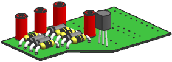
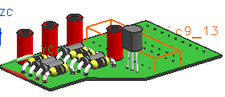

关闭选定的部件
-
在装配导航器中，选择其中一个 des03_laser_ic9_13节点并展开预览面板。
该面板显示组件是如何在它保存的部件文件中显示的。

-
选择文件→关闭→选定的部件。
-
在关闭部件对话框中的部件组中，在过滤器下方，选择会话中的所有部件。
-
从列表中选择 des03_laser_ic9_13并点击确定。
组件 des03_laser_ic9_13的事例不再显示在图形窗口中。

在装配导航器中，des03_laser_ic9_13节点的旁边，复选框已被清除
 。
。组件 des03_laser_ic9_13 不再加载到装配中。
-
在装配导航器中，将您的光标移动到其中一个 des03_laser_ic9_13的节点上。
即使组件已关闭，仍然可以看见显示在图形窗口中的边界框。
